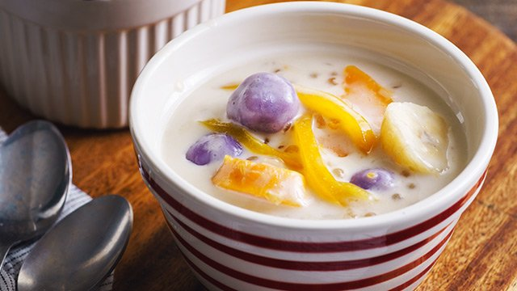

05
Ginataang Halo-Halo (Ginataang Bilo-Bilo)

Prep Time
20 minutes
Cook Time
30 minutes
Total Time
50 minutes
Course
Snacks/Merienda
Cuisine
Filipino
Servings
10
Ingredients
- 1 Cup glutinous rice flour
- 1 tablespoon rice flour
- 1/2 Cup warm water (plus 1 tablespoon)
- 4 cups coconut milk (gata), fresh is best
- 1 Cup sugar
- 1 Cup jackfruit (langka), shredded
- 3 cups sweet potato (kamote), cubed
- 1 Cup taro root (gabi), cubed
- 1 1/2 Cup ube, cubed
- 1 1/4 cups banana (saba variety), sliced (you may also use plantains)
- 2 cups Mini Tapioca (Sago), cooked
- 1 Cup coconut cream (kakang gata), fresh is best
Instructions
- Make the glutinous rice balls: Combine glutinous rice flour and rice flour.
Add warm water and knead to form a dough. Take ½ tablespoon dough and roll it into a ball. Place on a plate.
Repeat with the rest of the dough. Cover balls with plastic wrap and set aside.
00:30
- Cook the coconut mixture: Boil 3 cups of water, coconut milk, sugar, and jackfruit in a pot
over medium heat. Lower the heat and simmer for 10 minutes.
10:00
- Simmer the root vegetables: Add sweet potatoes, taro, ube, and saba bananas. Simmer until tender.
Add the glutinous rice balls and tapioca pearls. Simmer for 5 to 8 minutes.
08:00
- Add the coconut cream: Add the coconut cream and simmer for 5 more minutes. Serve hot.
05:00